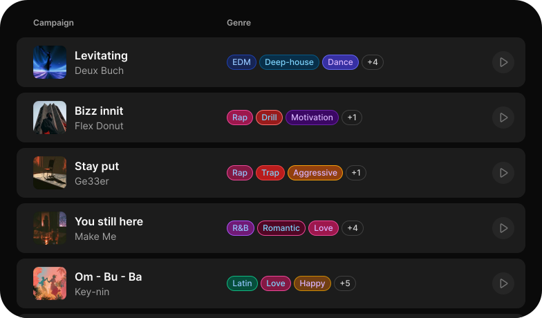

Connecting music with content
Musin is a music promotion platform
that connects music with content creators.


3,818
Tracks available now
8,024
Content creators active
Join as a music artist
Reach new audiences and build engagement around your music through social media content.
Join as a content creator
Discover music that fits your content and get paid to feature it in your social media posts.
Musin platform
Music Campaign
Music artists upload a track and define the campaign parameters.

Accounts selection
Music artists choose accounts to post with their track.

Music selection
Content creators choose tracks to post with.

Direct Payments
Funds are released after each paid post is confirmed.

FAQ
How much does it cost to join?
Joining Musin is free with no listing fees or subscriptions. Content creators pay a 20% commission only when they withdraw their earnings.
What follower count do I need to start earning?
100 followers is enough to start as a content creator. Your follower count sets the upper limit on the price you can ask per post.
Which platforms are supported?
TikTok, Instagram and YouTube for posting, Spotify and SoundCloud for tracks, and Stripe for payouts.
When are payments released?
After the artist confirms the post, or automatically if no dispute is opened. Funds go to the creator's connected Stripe account.
Why does content drive music discovery?
People discover music while watching videos they already enjoy. When a track becomes part of relevant social content it reaches audiences in a natural and memorable context.
How is content-based promotion different from traditional advertising?
Traditional advertising asks people to stop and pay attention. Content-based promotion places music inside something they already chose to watch.
Why use Musin instead of arranging collaborations manually?
Musin brings track discovery, account selection, campaign management, post confirmation and payments into one place instead of relying on scattered messages, spreadsheets and individual negotiations.